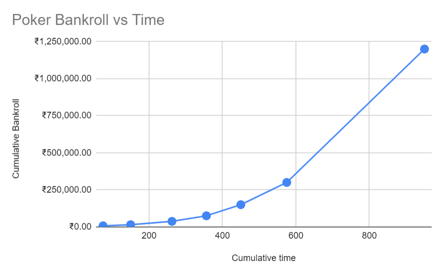

I am setting out on a journey to battle it out on the tables, learn the intricacies of the game, and to pay attention.
It is usually not prudent to set money goals, but I am going to do it anyways - A million rupees in ~900 hours of play and study.
When this challenge is done, will probably do a couple more challenges: 10,000$ to 150,000$, then 100,000$ to 1,500,000$.
I believe I can pull these challenges off in the next 3-4 years (3-6 hours per day), 1 year per challenge. But with anything ambitious, it comes with a few ifs - I have to learn, relearn, and unlearn at a rapid pace, and keep myself in great mental and physical health to keep up with the challenge's requirements. Luck helps too (Direct or indirect), as with any ambitious endeavor.

Week 0: I have already completed a portion of the challenge (From 500 INR to 25347 INR). Analyzing my played hands and studying poker outside of the tables is crucial to increase my edge against my opponents, and I haven't done much of that. I'll start to put in an hour of study for every 4 hours of play for the rest of this challenge. I expeect to play ~25 hours every week (Centered around the weekends, as that's when I'll get the most action).
Return to Homepage